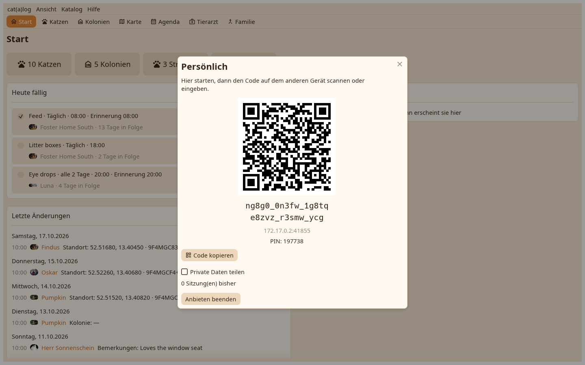

1. Die Abgleichseite
Der gemeinsame Ordner, die Bündel, und persönlich. Gastgeber werden.

2. Gastgeber
Der Paarcode als QR und als Text mit der PIN. Das Telefon scannt ihn und tritt bei; was ankam, öffnet sich wie nach einer Ordnerrunde. Der Schreibtisch bedient nur, solange dieses Fenster offen ist.
